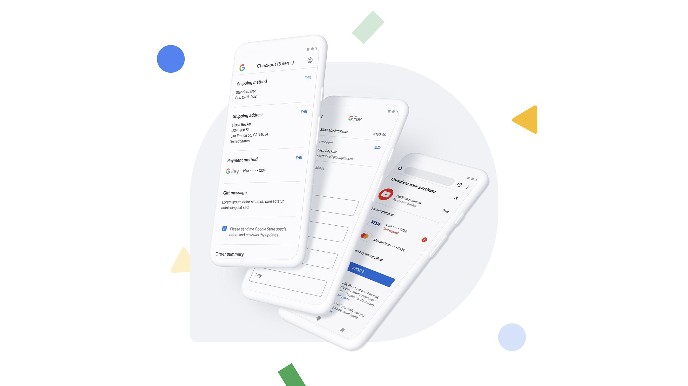
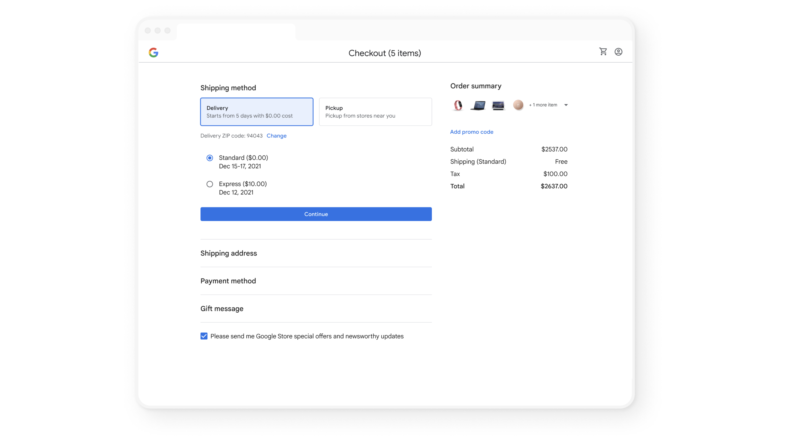

Creating a platform checkout for all of Google.

The Challenge
Google's checkout experience was embedded across dozens of products and clients — each with its own UI constraints and engineering infrastructure. The existing approach wouldn't scale to all of Google. But a full platform reset meant breaking how teams had built everything.
The harder challenge wasn't the design work. It was building the case for that reset at Google's scale: getting stakeholders with competing priorities to believe the investment was worth the disruption. The political and organizational lift required as much effort as the product itself. We made the case, got the buy-in, and rebuilt the checkout from the ground up.
Project Outcome
Higher conversion
In our very first experiment we saw a 9% increase in conversion when we tested our new model against the control. This was a huge leap for us and clearly showed the impact of our work.
Design system contributions
My team contributed over a dozen new components to our Platform design spec and Figma design kit to increase reusability, consistency, and efficiency across the team.
More robust tech infra
Because of our work there was new technical infrastructure created that allowed us to swap navigation models without having to make changes at the individual component level. This allowed us to experiment with different models in different contexts.

The Navigation Model
Industry research pointed to three main checkout navigation models — multi-page, accordion, and single-page — but engineering capacity meant we had to prioritize one.
I had the team pressure-test each model against our constraints. Multi-page was the most common in the industry, but the accordion stood out: it let us complete all required tasks inline, reducing our dependency on surrounding Google 1P UIs we didn't control.
We grounded the decision in Baymard Institute research and ran our own studies comparing models across form factors and checkout scenarios.
I helped the team take a principled approach for things like selection and visual design
I anchored the team on the principle of "Don't make me think" based on the research we had conducted. Using this principle, the team used more intuitive and familiar interaction and visual conventions in multiple categories like color (using primary blue to communicate interactivity), shape (aligning to Material standards), and navigation affordances like auto-advance.
It was important to normalize a pattern and pressure test it across all of the data objects with their unique constraints to make sure it would work. There was a lot to weigh here especially across clients and also aligning our vision with Material Design standards, so we had to test various patterns and the design evolved with Material Design conventions.


I focused the team on identifying and solving for inconsistencies in the system
Each data object is connected to a unique UI component. Unfortunately, each component was built in somewhat of a silo for the purposes of a specific launch. I focused my team on paying off as much of this UX/tech debt as possible.
My team thought deeply about how we could normalize the UI across all of these objects — accounting for a summary state, an edit state, and an entry state for each one. Several teams ended up adopting the designs that came out of this normalization exercise.
Principles
We created dynamic product principles using the research we had done. We generated raw insights from the research, turned those into categorized postulates, identified patterns and distilled those into product principles.
01
Don't make me think
The buyflow should feel intuitive and familiar. Don't sacrifice clarity for simplicity.
02
Don't make me wait
Make the experience as fast as possible while balancing speed and control. Lower stakes checkouts can be faster than higher stakes.
03
Keep me safe
Safety is the perception of security and is a crafted value proposition. Addressing users concerns or worries makes the experience feel polished and professional.
04
Cost is king
Make it clear how much I'm spending now and in the future. Help me understand ways I can maximize savings and benefits without overwhelming me.